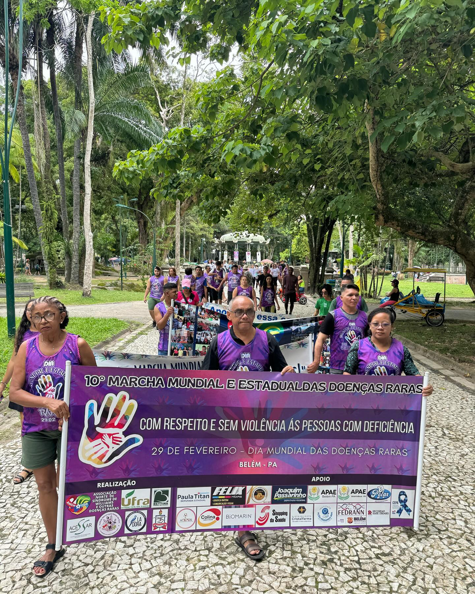

Projetos e Ações
Conheça as nossas iniciativas para transformar vidas e espalhar conscientização.

Acolhimento
O Instituto Raros do Norte desenvolve sua atuação em defesa das pessoas com doenças raras, buscando promover conscientização, inclusão social, acolhimento e valorização da vida. Por meio de iniciativas de mobilização e sensibilização, o trabalho tem como objetivo ampliar o conhecimento da sociedade sobre as doenças raras e dar visibilidade às necessidades enfrentadas diariamente pelos pacientes e seus familiares, Entre suas iniciativas, destaca-se a participação em eventos voltados aos profissionais de saúde, com o objetivo de compartilhar conhecimentos sobre doenças raras, contribuindo para que esses profissionais estejam mais preparados para reconhecer sinais e sintomas, identificar possíveis diagnósticos e compreender os cuidados e tratamentos adequados aos pacientes.
Campanhas de Conscientização
Entre os principais projetos de mobilização da comunidade está a Marcha pelos Raros, iniciativa realizada em Belém durante o período de conscientização sobre as doenças raras. A caminhada reúne pacientes, familiares, profissionais de saúde, instituições e membros da sociedade em um movimento coletivo de visibilidade e reivindicação de direitos. Além da mobilização pública, a conscientização e a disseminação de informações são fundamentais para combater a desinformação e o preconceito, fortalecer as redes de apoio e aproximar a sociedade da realidade das famílias que convivem com essas condições. O compromisso com essa causa é também um convite à participação coletiva. Cada ação de conscientização, cada espaço de diálogo e cada iniciativa de inclusão contribui para construir uma sociedade mais informada, acolhedora e comprometida com os direitos das pessoas com doenças raras.